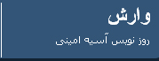

پذيرش > سایت نوشته ها > دیه فقط ثروتمندان را نجات می دهد! زندگی این زن را نمی خرید؟
 تاثیر قوانین تبعیض آمیز تاثیر قوانین تبعیض آمیز

 دیه فقط ثروتمندان را نجات می دهد! زندگی این زن را نمی خرید؟ دیه فقط ثروتمندان را نجات می دهد! زندگی این زن را نمی خرید؟
17 اردیبهشت 1387 - وارش ، آسیه امینی - نسخه قابل چاپ
"پدرم سيلي زد به گوشم و بله را گرفت"! اين تک جمله را در ذهن تکرار و تکرار کنيم! تصويرش کنيم. دختر 20 ساله اي را که قرار است به عقد مردي 68 ساله درآيد. دختر 20 ساله اي که دختر 7 ساله اي هم در خانه دارد! دختر 20 ساله اي که در 13 سالگي به پسردايي اش داده شد.
داده شد! زيرا کدام دختر 13 ساله اي در يک شهرستان دور افتاده مثل اليگودرز، توان انتخاب و اختيار انتخاب همسر دارد؟
اکرم 32 ساله شوهرش را کشته است. پيش از اين که او را به اين جرم، در ذهنمان به دار بياويزيم، بيشتر بشناسيمش.
اکرم دختر مردي کشاورز است. تا کلاس پنجم سواد دارد. در 13 سالگي به همسري پسردايي اش در آمد که 5 سال بعد از آن، پسردايي، رهايش کرد و به دنبال زني ديگر به رفسنجان رفت. بهاي رهايي اکرم نزد شوهر خيانت کار، 250 هزار تومان بود که توسط همسر جديد مرد، پرداخته شد و البته بهاي گزافتري نيز به يادگار براي اکرم ماند؛ فاطمه 5 ساله، اين روزها دختر 17 ساله اي است که بيرون از زندان مادرش، بارها زنداني تر از اوست.
20 سالگي براي اکرم با تهديد پدر به ازدواج دوم آغاز شد. ازدواج با مردي که همچون پدر اکرم در کار حفاري بود. مردي هم سن و سال پدر و هم سخن و همفکر و لابد همدل با او. اکرم به اين ازدواج تن نداد. پاسخش سيلي و تهديد بود و بالاخره چه کند زن 20 ساله طلاق گرفته اي که خودش و دخترکش سربار پدرند در روستايي دورافتاده در حوالي اليگودرز؟
اين بار به زني حسن رفت. با کلي وعده و اميد از اين که وضع مالي او خوب است و دستکم تامين مالي دارند. وعده اي که خيلي زود با واقعيت ديگري روبرويش کرد. حسن 68 ساله، نه فقط چيزي بيشتر از گذشته به او نداد، که هوسبازي اش بار ديگر خيانت را به اکرم آموخت. دوبار تقاضاي طلاق کرد و هر دوبار ناکام ماند.
روزي در راه، دچار شد. نه دچار مردي از جنس رويا. که دچار خود رويا شد. به فريب مردي که وعده رهايي مي داد – و بعد معلوم شد که بهاي وعده هاي او نيز 10 ميليون چک پاس نشده است!- اکرم شد متهم به قتل و حسن در استانه هفتادسالگي، شد مقتولي که به اتفاقي گزنده و تلخ، از ميان برداشته شد. داستان مرد، بعد از چند قرص ديازپام و ضربه هاي مرگبار چاقو در شعله هاي آتش سوخت. اکرم را مرد جوان فراري داد و همان شب فرار در کنار دريا رهاش کرد و به سي زندگي خود رفت.
اکرم به نزد پدر برگشت و بعد از چندي خودش را سپرد به دست دادگاهي که بين او و حق، داوري کند. بهاي حق گزاف بود و جان اکرم بي مقدار! پس زندگي از دست شده بيست و چند ساله او نتوانست ياري اش کند. حکم اعدام صادر شد.
اينک در واپسين لحظه ها، زندگي اکرم به 60 ميليون تومان قيمت خورده است. حراجي که يک سويش اکرم و فاطمه اند و سر ديگر اعدام.
خريداراني اگر يافت شد، اکرم به زندگي بر مي گردد. و اگر نه، تا چندي دگر، اکرم نيز قصه فراموش شده اي خواهد بود که در يک روز بهاري توسط شما خوانده شد!
و باقي آنچه نوشته ام، صحبتهاي من و مينا است. مينا جعفري وکيل اکرم مهدوي است. او از مردم کمک خواسته و با اين وصف چندان اميدوار نيست. از نظر او ديه راهي است براي رهايي مردم ثروتمند از مجازاتي چنين.
از پرونده خانم اکرم مهدوي خبر جديدي نيست؟
پرونده ايشان در اجراي احکام دادسراي جنايي تهران است.
يعني استيذان گرفته و آماده اجراست؟
خير. ايشان چون شناسنامه اش از بين رفته، هنوز استيذان نگرفته. درواقع مرحله پيش از استيذان است.
ولي شنيده شده بود که حکم ايشان روز 15 ارديبهشت اجرا مي شود؟
بله، اين حرف را در در زندان به خود اکرم گفته بودند. و چه بسا اگر شناسنامه ايشان آماده بود، حکمش تا به حال اجرا شده بود.
اکرم يکي از زنان شوهر کش است. قتل در هر شکلي که انجام شود براي افکار عمومي پذيرفته شدني نيست. ولي پديده شوهر کشي يکي از پديده هايي است که متاسفانه آمار آن رو به افزايش است. شما با يکي از اين زنان از نزديک روبروييد و وکالت ايشان را داريد. از نظر شما چرا اکرم همسرش را کشته است؟ و چه عواملي باعث شده تا او به اين بن بست برسد؟
اکرم يک آدم کاملا مستاصل است. استيصال را شما در چهره او هم مي توانيد ببينيد. او هرگز از حمايت خانواده برخوردار نبوده؛ حتا حالا که در دو قدمي اعدام قرار دارد.
ازدواج اول او در 13 سالگي بوده که مسلما براي دختري 13 ساله در انتخاب همسر و تشکيل زندگي مشترک نه اختياري در کار است و نه حق انتخابي. حتا طلاقش هم که در 18 سالگي اش رخ داد، از همين دست است. شوهرش به دنبال زني ديگر رفت و او و دختر 5 ساله اش را به امان خدا سپرد. در واقع اکرم معني خيانت را زماني فهميد که خودش نوجواني بيش نبود. در ازدواج دومش هم باز حق انتخابي نداشت. دو سال بعد از اين که همسر اول طلاقش داد، پدرش او را به مردي داد که 48 سال بزرگتر از او بود. مردي که اکرم درباره او مي گويد خجالت مي کشيدم بگويم اين مرد همسر من است. او همسن پدر يا پدربزرگم بود! بنابراين درست است که ما با يک قاتل، با اکراه روبرو مي شويم.ولي نمي شود زندگي پنهان در پشت اين قتل را نبينيم. نمي شود کينه و تحقير و توهين جمع شده در ذهن و وجود اين زن را نبينيم. نمي شود از خودمان نپرسيم که حق شادي و حق انتخاب اين زن، کي و کجا رهعايت شده؟ همه مردان زندگي اش او را استثمار کردند. حتا مردي که بظاهر او را دوست داشت و با همين حربه فربش داد.
اکرم عاشق شده بود؟
به نظر مي رسد که او بيشتر مي خواسته از زندگي اش و از خفقاني که در آن اسير بود، فرار کند. او نخستين بار بود که با کردي روبرو مي شد که حرفهاي ديگري به او مي زد. وعده مي داد. اميد مي داد. اکرم عاشق اين مرد نبود. او عاشق آن رهايي بود که او وعده مي داد. ضمن اين که اکرم از اتهام رابطه نامشروع تبرئه شد. در حالي که مي دانيم که امکان آن را هم داشت. اين خودش دليل ديگري است بر اين که تنگناي زندگي اش او را به ستوه آورده بود.
اکرم نتوانسته از اولياء دم رضايت بگيرد. الان وضعيت او چگونه است؟ آيا اميدي به نجاتش هست؟
خانواده مقتول فقط به شرط پول حاضر به رضايت شده اند. مبلغي هم که پيشنهاد داده اند، خيلي زياد است. آنها 60 ميليون تومان خواسته اند که تقريبا دو برابر ديه انسان کاملاست.
ديه انسان کامل چقدر است؟
امسال [با توجه به تورم] 40 ميليون تومان. سال قبل 35 ميليون تومان بود که اين رقم آن موقع خواسته شد.
با توجه به اين که جان موکلت اين روزها بسته به اين است که تو و ديگران قادر باشيد براي اکرم اين پول را تهيه کنيد، نظرت در مورد ديه چيست؟
ديه راهي است که افراد ثرتمند را از مجازات نجات مي دهد. درواقع اينجا مساله حق و ناحق نيست. بلکه داشتن و نداشتن پول مطرح است. فرد دارا براحتي مي تواند رضايت بگيرد و ندار، براحتي پاي چوبه دار مي رود. حالا سوال اين است که تصميم گير مجازات اين انسانها کيست؟ و نقش نهادهاي رسمي و قانوني در اين ميان چيست؟ آنچه که پيداست اين است که تعيين کننده نظر شخصي افراد صاحب خون است که براحتي مي توان اين نظر را خريد. بنابراين متضرر واقعي فقط افراد فقيرند و در جامعه اي که شرايط به گونه اي است که زناني چون اکرم کم نيستند، بيشترين آسيب متوجه آنهاست.
شما چندي پيش از مردم براي نجات موکلتان درخواست کمک کرديد. تا حالا چقدر کمک مردمي جمع شده است؟
خيلي کم! چيزي حدود 3 ميليون و نيم. وعده هايي داده شده بود که هيچ کدامش محقق نشده. کمکهايي هم که تا کنون جمع آوري شده، همگي از داخل کشور بوده. با توجه به فرصت کمي که براي اکرم باقي مانده، خواهشم از کساني که در بيرون از ايران زندگي مي کنند و مي خواهند به او کمک کنند اين است که با توجه به مشکلاتي که سيستم بانکي کشور ما در ارسال و دريافت پول از خارج دارد، کمکهايشان از طريق افراد داخل کشور به شماره اعلام شده ريخته شود.
نقل از سایت روزآن لاین
این شماره حساب وکیل اکرم است که برای جمع آوری دیه برای اکرم باز شده است:
"حساب سيبا به شماره 0302917750001 نزد شعبه مبارزان بانك ملي "
و این هم وبلاگی در حمایت از اکرم مهدوی. اگر مطلبی در این باره می نویسید برای این وبلاگ کامنت بگذارید
وارش
ارسال به
بالاترین
،
توییتر
،
فریندفید
،
فیسبوک
در همين بخش :
 یک خبر تلخ؟ یک قانونشکنی؟ یک تصمیم بخشنامهای جدید؟ یک خبر تلخ؟ یک قانونشکنی؟ یک تصمیم بخشنامهای جدید؟
چرا بایست به سکسوالیته پرداخت؟ / نفیسه آزاد
آزارجنسی خانگی؛ «قربانی» نه، «نجات یافته»
زنان، بزرگترین بازندگان بهار عرب
سانسور از دیدگاه جنسیتی/الهه امانی
ديگر بخش ها :
طرح یک میلیون امضا
|
مقالات
|
سایت نوشته ها
|
اخبار
|
گزارش كمپين
|
گفت و گو
|
علیه سکوت
|
كوچه به كوچه
|
نامه های شما
|
گزارش ویژه
|
گفتگو با اعضا
|
ویژه سالگرد کمپین
|
تصویر برابری
|
دل آرام علی
|
تریبون
|
مقالات
|
تاریخ شفاهی
|
خارج از چارچوب
|
کتابخانه
|
درباره کمپین
|
کمپین در شهرها
|
کمپین در بند
|
صدای تغییر
|
ویژه 22 خرداد
|
لایحه حمایت از خانواده
|
گالری
|
عشا مومنی
|
امیر یعقوبعلی
|
خدیجه مقدم
|
راحله عسگری زاده و نسیم خسروی
|
پروین اردلان،جلوه جواهری، مریم حسین خواه، ناهید کشاورز
|
زینب پیغمبرزاده
|
سعیده امین، سارا ایمانیان، محبوبه حسین زاده، ناهید کشاورز و همایون نامی
|
احترام شادفر
|
نسیم سرابندی زاده،فاطمه دهدشتی
|
وبلاگ مهمان
|
پرونده خرم آباد
|
دستگیری ها
|
مریم مالک
|
پرستو اللهیاری
|
مهرنوش اعتمادی
|
سمیه رشیدی
|
Other Languages
|
همراهان
|
«فراخوان کمپین ده روز با بهاره هدایت»
| English
|